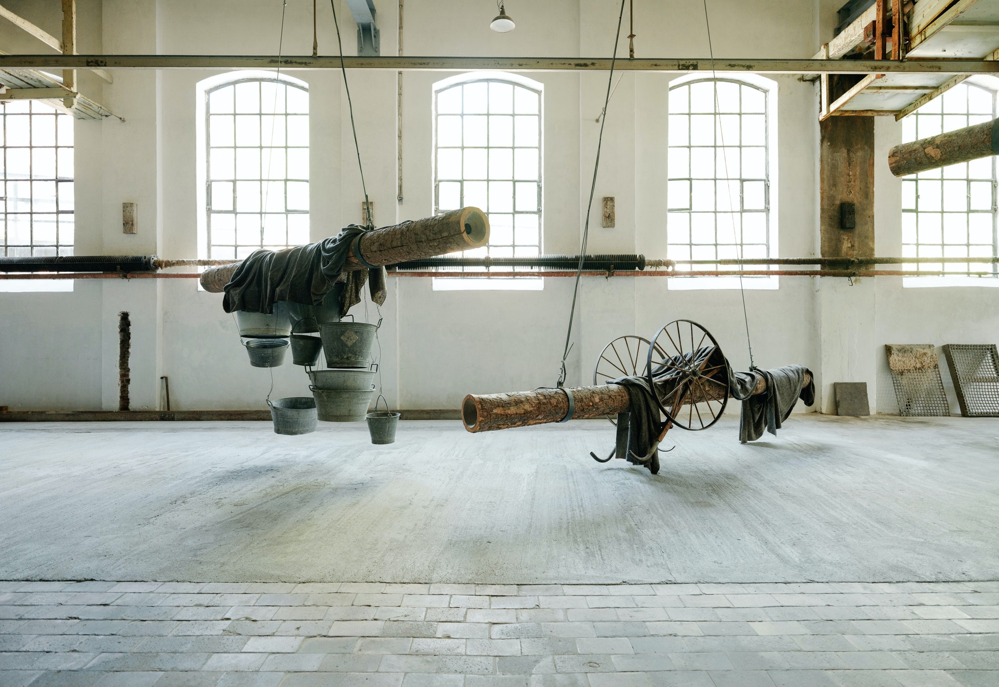

Industrimuseum
Industrimuseet ved Kistefos innehar en historisk samling av bygninger, maskiner,
industrielt inventar og gjenstander som formidler historier fra arbeidslivet og det sosiale livet
for arbeiderne ved A/S Kistefos Træsliberi. Utstillinger er satt opp i tresliperiet, fyrhuset,
formannsboligen vognskjulet, brannhuset og snekkerverkstedet.

Skulpturer
Den permanente skulptursamlingen på Kistefos består i dag av 47 skulpturer av flere ulike
samtidskunstnere med fokus på både nasjonale verk av norske (1999), samt internasjonale
samtidskunstnere. De senere årene (fra 2005) har fokuset vært på steds-spesifikke skulpturer
som representerer temaene vann, energi, industri, og natur.

Kunst
Kistefos presenterer kunst fra flere ulike kunstnere i ulike og unike lokaler. The Twist er galleriet som ligger vakkert
til langs elven med hele tre utstillingslokaler; Closed Gallery, Twist Gallery og Panorama Gallery.
Videre finner vi Nybruket kunsthall som tidligere tilhørte tresliperiet på Kistefos, men i dag
inneholder bygget skiftende utstillinger fra både norske og internasjonale kunstnere.